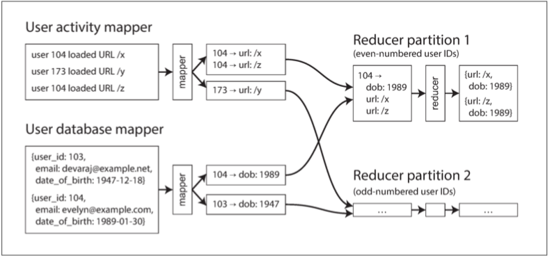

第十章：批处理
三种不同类型的系统：
- 服务（在线系统）：服务等待客户的请求或指令到达。每收到一个便会试图尽快处理它并发回一个响应。
- 响应时间通常是服务性能的主要衡量指标，可用性通常非常重要。
- 批处理系统（离线系统）：大量的输入数据，跑一个 作业（job） 来处理它，并生成一些输出数据。
- 性能衡量标准通常是吞吐量（处理特定大小的输入所需的时间）
- 流处理系统（准实时系统）：介于在线和离线（批处理）之间
- 流处理消费输入并产生输出（并不需要响应请求），流式作业在事件发生后不久就会对事件进行操作，而批处理作业则需等待固定的一组输入数据。流处理系统比起批处理系统具有更低的延迟。
批处理是构建可靠、可伸缩和可维护应用程序的重要组成部分。
- 2004 年发布的批处理算法 Map-Reduce（可能被过分热情地）被称为 “造就 Google 大规模可伸缩性的算法”【2】。随后在各种开源数据系统中得到应用，包括 Hadoop、CouchDB 和 MongoDB。
与多年前为数据仓库开发的并行处理系统【3,4】相比，MapReduce 是一个相当低级别的编程模型，但它使得在商用硬件上能进行的处理规模迈上一个新的台阶。
虽然 MapReduce 的重要性正在下降【5】，但它仍然值得去理解，因为它描绘了一幅关于批处理为什么有用，以及如何做到有用的清晰图景。
实际上，批处理是一种非常古老的计算方式。Map-Reduce 与 1940 年代和 1950 年代广泛用于商业数据处理的机电 IBM 卡片分类机器有着惊人的相似之处【7】。历史总是在不断重复自己。
分布式批处理框架需要解决的两个主要问题是：
- 分区：把所有的 相关 数据放在同一个地方；后 MapReduce 时代的数据流引擎若非必要会尽量避免排序；
- 容错：数据流引擎更多地将中间状态保存在内存中，更少地物化中间状态，故障时重算更多数据；
讨论了几种 MapReduce 的连接算法，也在 MPP 数据库和数据流引擎内部使用：
- 排序合并连接：每个参与连接的输入都通过一个提取连接键的 Mapper。通过分区、排序和合并，具有相同键的所有记录最终都会进入相同的 Reducer 调用。
- 广播散列连接：为连接输入大端的每个分区启动一个 Mapper，将输入小端的散列表加载到每个 Mapper 中，然后扫描大端，一次一条记录，并为每条记录查询散列表。
- 分区散列连接：两个连接输入以相同的方式分区，则可以独立地对每个分区应用散列表方法。
分布式批处理引擎有一个刻意限制的编程模型：回调函数（比如 Mapper 和 Reducer）被假定是无状态的,没有任何外部可见的副作用。隐藏一些困难的分布式系统问题：
- 当遇到崩溃和网络问题时，任务可以安全地重试，任何失败任务的输出都被丢弃。
批处理作业的显著特点是，它读取一些输入数据并产生一些输出数据，但不修改输入。输入数据是 有界的（bounded），一个工作在做完后，最终总是会完成的。
使用Unix工具的批处理
简单的例子：一台 Web 服务器，每次处理请求时都会在日志文件中附加一行。如下是 nginx 默认的访问日志格式：
16.58.210.78 - - [27/Feb/2015:17:55:11 +0000] "GET /css/typography.css HTTP/1.1" 200 3377 "http://martin.kleppmann.com/" "Mozilla/5.0 (Macintosh; Intel Mac OS X 10_9_5) AppleWebKit/537.36 (KHTML, like Gecko) Chrome/40.0.2214.115 Safari/537.36"
日志格式的定义，如下所示：
$remote_addr - $remote_user [$time_local] "$request" $status $body_bytes_sent "$http_referer" "$http_user_agent"
简单日志分析
在你的网站上找到五个最受欢迎的网页，使用如下的 unix 命令1：
cat /var/log/nginx/access.log | #1
awk '{print $7}' | #2
sort | #3
uniq -c | #4
sort -r -n | #5
head -n 5 #6
解释如下：
- 读取日志文件；
- 将每一行按空格分割成不同的字段，每行只输出第七个字段，恰好是请求的 URL；
- 按字母顺序排列请求的 URL 列表，被请求多次的URL排序后会重复出现；
uniq命令通过检查两个相邻的行是否相同来过滤掉输入中的重复行-c表示还要输出一个计数器：每个不同的 URL，输出该 URL 的次数。- 第二种排序按每行起始处的数字（
-n）排序，这是 URL 的请求次数。然后逆序（-r）返回结果，大的数字在前。 -
最后，只输出前五行（
-n 5），并丢弃其余的。 -
该系列命令的输出如下所示：
4189 /favicon.ico
3631 /2013/05/24/improving-security-of-ssh-private-keys.html
2124 /2012/12/05/schema-evolution-in-avro-protocol-buffers-thrift.html
1369 /
915 /css/typography.css
它能在几秒钟内处理几 GB 的日志文件，并且你可以根据需要轻松修改命令。例如，如果要从报告中省略 CSS 文件，可以将 awk 参数更改为 '$7 !~ /\.css$/ {print $7}', 如果想统计最多的客户端 IP 地址，可以把 awk 参数改为 '{print $1}'，等等。
使用 awk、sed、grep、sort、uniq 和 xargs 的组合，可以在几分钟内完成许多数据分析，并且它们的性能相当的好【8】。
命令链与自定义程序
除了 Unix 命令链，你还可以写一个简单的程序来做同样的事情。例如，Ruby代码：
counts = Hash.new(0) # 1
File.open('/var/log/nginx/access.log') do |file|
file.each do |line|
url = line.split[6] # 2
counts[url] += 1 # 3
end
end
top5 = counts.map{|url, count| [count, url] }.sort.reverse[0...5] # 4
top5.each{|count, url| puts "#{count} #{url}" } # 5
这个程序并不像 Unix 管道那样简洁，但是它的可读性很强，喜欢哪一种属于口味的问题。但两者除了表面上的差异之外，执行流程也有很大差异，如果你在大文件上运行此分析，则会变得明显。
排序 VS 内存中的聚合
在此例中，作业的 工作集（working set，即作业需要随机访问的内存大小）仅取决于不同 URL 的数量
- 如果作业的工作集大于可用内存，则排序方法的优点是可以高效地使用磁盘。
归并排序具有在磁盘上运行良好的顺序访问模式。
- 数据块可以在内存中排序并作为段文件写入磁盘，然后多个排序好的段可以合并为一个更大的排序文件。
GNU Coreutils（Linux）中的 sort 程序通过溢出至磁盘的方式来自动应对大于内存的数据集，并能同时使用多个 CPU 核进行并行排序【9】。
- 之前看到的简单的 Unix 命令链很容易伸缩至大数据集，且不会耗尽内存。瓶颈可能是从磁盘读取输入文件的速度。
Unix哲学
Unix 管道的发明者道格・麦克罗伊（Doug McIlroy）在 1964 年首先描述了这种情况【11】：
- 需要一种类似园艺胶管的方式来拼接程序 —— 当我们需要将消息从一个程序传递另一个程序时，直接接上去就行。I/O 应该也按照这种方式进行。
通过管道连接程序的想法成为了现在被称为 Unix 哲学 的一部分，该哲学在 1978 年表述如下【12,13】：
- 让每个程序都做好一件事。要做一件新的工作，写一个新程序，而不是通过添加 “功能” 让老程序复杂化。
- 期待每个程序的输出成为另一个程序的输入。不要将无关信息混入输出。避免使用严格的列数据或二进制输入格式。不要坚持交互式输入。
- 设计和构建软件时，即使是操作系统，也让它们能够尽早地被试用，最好在几周内完成。不要犹豫，扔掉笨拙的部分，重建它们。
- 优先使用工具来减轻编程任务，即使必须绕道去编写工具，且在用完后很可能要扔掉大部分。
这种方法 —— 自动化，快速原型设计，增量式迭代，对实验友好，将大型项目分解成可管理的块 —— 听起来非常像今天的敏捷开发和 DevOps 运动。奇怪的是，四十年来变化不大。
sort 工具是一个很好的例子。可以说它比大多数编程语言标准库中的实现（它们不会利用磁盘或使用多线程，即使这样做有很大好处）要更好。然而，单独使用 sort 几乎没什么用。它只能与其他 Unix 工具（如 uniq）结合使用。
Unix 如何实现这种这些小程序间的可组合性？
统一的接口
如果你希望能够将任何程序的输出连接到任何程序的输入，那意味着所有程序必须使用相同的 I/O 接口。
- 在 Unix 中，这种接口是一个 文件（file，更准确地说，是一个文件描述符）。
一个文件只是一串有序的字节序列。可以使用相同的接口来表示许多不同的东西：
- 文件系统上的真实文件，到另一个进程（Unix 套接字，stdin，stdout）的通信通道，设备驱动程序（比如
/dev/audio或/dev/lp0），表示 TCP 连接的套接字，等等。 - 实际上能让这些差异巨大的东西共享一个统一的接口是非常厉害的，这使得它们可以很容易地连接在一起2。
许多（但不是全部）Unix 程序将这个字节序列视为 ASCII 文本：awk、sort、uniq 和 head
\n（换行符，ASCII0x0A）字符分隔的记录列表；可以用其它的分隔符，如ASCII 记录分隔符0x1E【14】。所有这些程序都使用相同的记录分隔符允许它们互操作。
每条记录（即一行输入）的解析则更加模糊。
- Unix 工具通常通过空白或制表符将行分割成字段，但也使用 CSV（逗号分隔），管道分隔和其他编码。
- 即使像
xargs这样一个相当简单的工具也有六个命令行选项，用于指定如何解析输入。
ASCII 文本的统一接口大多数时候都能工作，但它不是很优雅：
- 日志分析示例使用
{print $7}来提取网址，这样可读性不是很好。在理想的世界中可能是{print $request_url}或类似的东西。
没有多少软件能像 Unix 工具一样交互组合的这么好：你不能通过自定义分析工具轻松地将电子邮件帐户的内容和在线购物历史记录以管道传送至电子表格中，并将结果发布到社交网络或维基。今天，像 Unix 工具一样流畅地运行程序是一种例外，而不是规范。
即使是具有 相同数据模型 的数据库，将数据从一种数据库导出再导入到另一种数据库也并不容易。缺乏整合导致了数据的 巴尔干化3。
逻辑与布线相分离
Unix 工具的另一个特点是使用标准输入（stdin）和标准输出（stdout）。
- 默认：标准输入来自键盘，标准输出指向屏幕；也可以从文件输入和 / 或将输出重定向到文件。
管道允许将一个进程的标准输出附加到另一个进程的标准输入（有个小内存缓冲区，而不需要将整个中间数据流写入磁盘）。
允许 shell 用户以任何他们想要的方式连接输入和输出；该程序不知道或不关心输入来自哪里以及输出到哪里。
- 可以说这是一种 松耦合（loose coupling），晚期绑定（late binding）【15】或 控制反转（inversion of control）【16】。
可以编写自己的程序，并将它们与操作系统提供的工具组合在一起。你的程序只需要从标准输入读取输入，并将输出写入标准输出，它就可以加入数据处理的管道中。
但是，使用 stdin 和 stdout 能做的事情是有限的。
- 需要多个输入或输出的程序虽然可能，却非常棘手；没法将程序的输出管道连接至网络连接中【17,18】4；
- 如果程序直接打开文件进行读取和写入，或者将另一个程序作为子进程启动，或者打开网络连接，那么 I/O 的布线就取决于程序本身。
透明度和实验
使 Unix 工具如此成功的部分原因是，它们使查看正在发生的事情变得非常容易：
- Unix 命令的输入文件通常被视为不可变的。这意味着你可以随意运行命令，尝试各种命令行选项，而不会损坏输入文件。
- 可以在任何时候结束管道，将管道输出到
less，然后查看它是否具有预期的形式。这种检查能力对调试非常有用。 - 可以将一个流水线阶段的输出写入文件，并将该文件用作下一阶段的输入。这使你可以重新启动后面的阶段，而无需重新运行整个管道。
因此，与关系数据库的查询优化器相比，即使 Unix 工具非常简单，但仍然非常有用，特别是对于实验而言。
然而，Unix 工具的最大局限在于它们只能在一台机器上运行 —— 而 Hadoop 这样的工具即应运而生。
MapReduce和分布式文件系统
一个 MapReduce 作业可以和一个 Unix 进程相类比：它接受一个或多个输入，并产生一个或多个输出。
- 运行 MapReduce 作业通常不会修改输入，除了生成输出外没有任何副作用。输出文件以连续的方式一次性写入（一旦写入文件，不会修改任何现有的文件部分）。
MapReduce 作业在分布式文件系统上读写文件。在 Hadoop 的 MapReduce 实现中，该文件系统被称为 HDFS（Hadoop 分布式文件系统），一个 Google 文件系统（GFS）的开源实现【19】。
- 除 HDFS 外，还有各种其他分布式文件系统，如 GlusterFS 和 Quantcast File System（QFS）【20】
- Amazon S3、Azure Blob 存储和 OpenStack Swift【21】等对象存储服务在很多方面都是相似的5
HDFS 基于 无共享 原则：
- NAS/SAN 等共享磁盘存储由集中式存储设备实现，通常使用定制硬件和专用网络基础设施（如光纤通道）；
- 无共享方法不需要特殊的硬件，只需要通过传统数据中心网络连接的计算机。
HDFS 在每台机器上运行了一个守护进程（DataNode），它对外暴露网络服务，允许其他节点访问存储在该机器上的文件（假设数据中心中的每台通用计算机都挂载着一些磁盘）。而名为 NameNode 的中央服务器会跟踪哪个文件块存储在哪台机器上。
- 为了容忍机器和磁盘故障，文件块被复制到多台机器上；
- 多个机器上的相同数据的多个副本，或者 Reed-Solomon 码这样的纠删码方案；
- 与 RAID 相似，后者可以在连接到同一台机器的多个磁盘上提供冗余；区别在于在分布式文件系统中，文件访问和复制是在传统的数据中心网络上完成的，没有特殊的硬件。
HDFS 的可伸缩性已经很不错了：在撰写本书时，最大的 HDFS 部署运行在上万台机器上，总存储容量达数百 PB【23】。使用商品硬件和开源软件的 HDFS 上的数据存储和访问成本远低于在专用存储设备上支持同等容量的成本【24】。
MapReduce作业执行
Web 服务器日志分析为例进行阐述，作为一个 MapReduce 作业执行：
- 读取一组输入文件，并将其分解成 记录（records）。每条记录都是日志中的一行（即
\n是记录分隔符）。 - 调用 Mapper 函数，从每条输入记录中提取一对键值。Mapper 函数是
awk '{print $7}' - 按键排序所有的键值对。由第一个
sort命令完成 - 调用 Reducer 函数遍历排序后的键值对。由
uniq -c命令实现
步骤 2（Map）和 4（Reduce）是你编写自定义数据处理代码的地方。步骤 3 中的排序步骤隐含在 MapReduce 中。Mapper 的输出始终在送往 Reducer 之前进行排序。
Mapper：Mapper 会在每条输入记录上调用一次，其工作是从输入记录中提取键值。对于每个输入，它可以生成任意数量的键值对（包括 None）。不会保留从一个输入记录到下一个记录的任何状态，因此每个记录都是独立处理的。Reducer：拉取由 Mapper 生成的键值对，收集属于同一个键的所有值，并在这组值上迭代调用 Reducer。Reducer 可以产生输出记录（例如相同 URL 的出现次数）。
在第 5 步中有第二个 sort 命令，它按请求数对 URL 进行排序。在 MapReduce 中，如果你需要第二个排序阶段，则可以通过编写第二个 MapReduce 作业并将第一个作业的输出用作第二个作业的输入来实现它。
Mapper 的作用是将数 据放入一个适合排序的表单中，并且 Reducer 的作用是处理已排序的数据。
分布式执行MapReduce
MapReduce 可以在多台机器上并行执行计算，而无需编写代码来显式处理并行问题。
- Mapper 和 Reducer 一次只能处理一条记录，框架可以处理在机器之间移动数据的复杂性。
在分布式计算中可以使用标准的 Unix 工具作为 Mapper 和 Reducer【25】，更常见的是被实现为传统编程语言的函数。
- Hadoop MapReduce 中，Mapper 和 Reducer 都是实现特定接口的 Java 类；
- MongoDB 和 CouchDB 中，Mapper 和 Reducer 都是 JavaScript 函数；
图 10-1 显示了 Hadoop MapReduce 作业中的数据流。
- 其并行化基于分区：作业的输入通常是 HDFS 中的一个目录，输入目录中的每个文件或文件块都被认为是一个单独的分区，可以单独处理 map 任务；
- 每个输入文件的大小通常是数百兆字节；MapReduce 调度器（图中未显示）试图在其中一台存储输入文件副本的机器上运行每个 Mapper；该原则称为将计算放在数据附近【27】：它节省了通过网络复制输入文件的开销，减少网络负载并增加局部性。

虽然 Map 任务的数量由输入文件块的数量决定，但 Reducer 的任务的数量是由作业作者配置的（它可以不同于 Map 任务的数量）。
- 框架使用键的散列值来确定哪个 Reduce 任务应该接收到特定的键值对，具有相同键的所有键值对最终落在相同的 Reducer 处；
键值对必须进行排序，但数据集可能太大，无法在单台机器上使用常规排序算法进行排序。
- 每个 Map 任务都按照 Reducer 对输出进行分区。每个分区都被写入 Mapper 程序的本地磁盘。
当 Mapper 读取完输入文件，并写完排序后的输出文件，MapReduce 调度器就会通知 Reducer 可以从该 Mapper 开始获取输出文件。
- Reducer 连接到每个 Mapper，并下载自己相应分区的有序键值对文件。按 Reducer 分区，排序，从 Mapper 向 Reducer 复制分区数据，这一整个过程被称为 混洗（shuffle）【6】。
Reduce 任务从 Mapper 获取文件，并将它们合并在一起，并保留有序特性。因此，如果不同的 Mapper 生成了键相同的记录，则在 Reducer 的输入中，这些记录将会相邻。
- Reducer 调用时会收到一个键，和一个迭代器作为参数，迭代器会顺序地扫过所有具有该键的记录（因为在某些情况可能无法完全放入内存中）。
MapReduce工作流
单个 MapReduce 作业可以解决的问题范围很有限，将 MapReduce 作业链接成为 工作流（workflow） 中是极为常见。
- Hadoop MapReduce 框架对工作流没有特殊支持，所以这个链是通过目录名隐式实现；
- 第一个作业必须将其输出配置为 HDFS 中的指定目录，第二个作业必须将其输入配置为从同一个目录。
被链接的 MapReduce 作业并没有那么像 Unix 命令管道（它直接将一个进程的输出作为另一个进程的输入，仅用一个很小的内存缓冲区），更像是一系列命令。
只有当作业成功完成后，批处理作业的输出才会被视为有效的（MapReduce 会丢弃失败作业的部分输出）。
- 工作流中的一项作业只有在先前的作业 —— 即生产其输入的作业 —— 成功完成后才能开始；
很多针对 Hadoop 的工作流调度器被开发出来，包括 Oozie、Azkaban、Luigi、Airflow 和 Pinball 【28】。
- 在维护大量批处理作业时非常有用：构建推荐系统时，由 50 到 100 个 MapReduce 作业组成的工作流是常见的【29】。
Hadoop 的各种高级工具（如 Pig 【30】、Hive 【31】、Cascading 【32】、Crunch 【33】和 FlumeJava 【34】）也能自动布线组装多个 MapReduce 阶段，生成合适的工作流。
Reduce侧连接与分组
在许多数据集中，一条记录与另一条记录存在关联是很常见的：
- 关系模型中的 外键，文档模型中的 文档引用 或图模型中的 边。
非规范化可以减少对连接的需求，但通常无法将其完全移除6。
当 MapReduce 作业被赋予一组文件作为输入时，它读取所有这些文件的全部内容；数据库会将这种操作称为 全表扫描。
- 只想读取少量的记录，则全表扫描与索引查询相比，代价非常高昂。
在批处理的语境中讨论连接时，我们指的是在数据集中解析某种关联的全量存在。例如我们假设一个作业是同时处理所有用户的数据，而非仅仅是为某个特定用户查找数据（而这能通过索引更高效地完成）。
示例：用户活动事件分析
图 10-2 给出一个批处理作业中连接的典型例子。左侧是事件日志，描述登录用户在网站上做的事情（称为 活动事件，即 activity events，或 点击流数据，即 clickstream data），右侧是用户数据库。
- 可以看作是星型模式：事件日志是事实表，用户数据库是其中的一个维度。

分析任务可能需要将用户活动与用户档案信息相关联：如确定哪些页面更受哪些年龄段的用户欢迎。因此，活动事件需要与用户档案数据库相连接。
- 最简单方法是，逐个遍历活动事件，并为每个遇到的用户 ID 查询用户数据库（在远程服务器上）；
- 性能可能会非常差：处理吞吐量将受限于受数据库服务器的往返时间，本地缓存的有效性很大程度上取决于数据的分布，并行运行大量查询可能会轻易压垮数据库【35】。
- 查询远程数据库意味着批处理作业变为 非确定的（nondeterministic），因为远程数据库中的数据可能会改变。
- 更好的方法是获取用户数据库的副本，并将它和用户行为日志放入同一个分布式文件系统中。
排序合并连接
在图10-2 中，键就是用户 ID：一组 Mapper 会扫过活动事件（提取用户 ID 作为键，活动事件作为值），而另一组 Mapper 将会扫过用户数据库（提取用户 ID 作为键，用户的出生日期作为值）。流程如下图 10-3 所示：
- 二次排序（secondary sort）【26】：使 Reducer 总能先看到来自用户数据库的记录，紧接着是按时间戳顺序排序的活动事件。
- 第一个值应该是来自用户数据库的出生日期记录，可以存储到局部变量中。Reducer 一次处理一个特定用户 ID 的所有记录，因此一次只需要将一条用户记录保存在内存中，无需网络请求；
- 这个算法被称为 排序合并连接（sort-merge join），因为 Mapper 的输出是按键排序的，然后 Reducer 将来自连接两侧的有序记录列表合并在一起。

把相关数据放在一起
在排序合并连接中，Mapper 和排序过程确保了所有对特定用户 ID 执行连接操作的必须数据都被放在同一个地方：
- 单次调用 Reducer 的地方。预先排好了所有需要的数据，Reducer 可以是相当简单的单线程代码，能够以高吞吐量和与低内存开销扫过这些记录。
使用 MapReduce 编程模型，能将计算的物理网络通信层面（从正确的机器获取数据）从应用逻辑中剥离出来（获取数据后执行处理）。
- 与数据库的典型用法形成了鲜明对比，从数据库中获取数据的请求经常出现在应用代码内部【36】。
- 也避免了让应用代码去担心部分故障，例如另一个节点的崩溃：MapReduce 在不影响应用逻辑的情况下能透明地重试失败的任务。
分组
把相关数据放在一起” 的另一种常见模式是，按某个键对记录分组（如 SQL 中的 GROUP BY 子句）。所有带有相同键的记录构成一个组，而下一步往往是在每个组内进行某种聚合操作，例如：
- 统计每个组中记录的数量（例如在统计 PV 的例子中，在 SQL 中表示为
COUNT(*)聚合） - 对某个特定字段求和（SQL 中的
SUM(fieldname)） - 按某种分级函数取出排名前 k 条记录。
在 MapReduce 之上实现分组和连接看上去非常相似。
分组的另一个常见用途是整理特定用户会话的所有活动事件，以找出用户进行的一系列操作（称为 会话化（sessionization）【37】）。例如，可以使用这种分析来确定显示新版网站的用户是否比那些显示旧版本的用户更有购买欲（A/B 测试），或者计算某个营销活动是否值得。
如果你有多个 Web 服务器处理用户请求，则特定用户的活动事件很可能分散在各个不同的服务器的日志文件中。
- 使用会话 cookie，用户 ID 或类似的标识符作为分组键，以将特定用户的所有活动事件放在一起来实现会话化，与此同时，不同用户的事件仍然散布在不同的分区中。
处理偏斜
如果存在与单个键关联的大量数据，则 “将具有相同键的所有记录放到相同的位置” 这种模式就被破坏了。
- 不成比例的活动数据库记录被称为 关键对象（linchpin object）【38】或 热键（hot key）。
在单个 Reducer 中收集与某个名人相关的所有活动（例如他们发布内容的回复）可能导致严重的 偏斜（也称为 热点）：
- 一个 Reducer 必须比其他 Reducer 处理更多的记录，所有后续作业必须等待最慢的 Reducer 才能启动。
如果连接的输入存在热键，可以使用一些算法进行补偿：
-
Pig 中的 偏斜连接（skewed join） 方法
-
先运行一个抽样作业（Sampling Job）来确定哪些键是热键【39】。
-
Mapper 会将热键的关联记录 随机 发送到几个 Reducer 之一。对于另外一侧的连接输入，与热键相关的记录需要被复制到 所有 处理该键的 Reducer 上【40】。
-
Hive 的偏斜连接优化采取了另一种方法。
-
在表格元数据中显式指定热键，并将与这些键相关的记录单独存放，与其它文件分开。当在该表上执行连接时，对于热键，它会使用 Map 端连接。
当按照热键进行分组并聚合时，可以将分组分两个阶段进行。
- 第一个 MapReduce 阶段将记录发送到随机 Reducer，以便每个 Reducer 只对热键的子集执行分组，为每个键输出一个更紧凑的中间聚合结果。
- 第二个 MapReduce 作业将所有来自第一阶段 Reducer 的中间聚合结果合并为每个键一个值。
Map侧连接
上一节描述的连接算法在 Reducer 中执行实际的连接逻辑，因此被称为 Reduce 侧连接。
- 优点是不需要对输入数据做任何假设：无论其属性和结构如何，Mapper 都可以对其预处理以备连接。
- 缺点是，排序，复制至 Reducer，以及合并 Reducer 输入，所有这些操作可能开销巨大【37】。
如果能 对输入数据作出某些假设，则通过使用所谓的 Map 侧连接来加快连接速度是可行的。。
- 使用了一个裁减掉 Reducer 与排序的 MapReduce 作业，每个 Mapper 只是简单地从分布式文件系统中读取一个输入文件块，然后将输出文件写入文件系统，仅此而已。
广播散列连接
适用于执行 Map 端连接的最简单场景是大数据集与小数据集连接的情况。
- 小数据集需要足够小，以便可以将其全部加载到每个 Mapper 的内存中。
广播散列连接（broadcast hash join）：
- 每个连接较大输入端分区的 Mapper 都会将较小输入端数据集整个读入内存中；散列 一词反映了它使用一个散列表。
- Pig（名为 “复制链接（replicated join）”），Hive（“MapJoin”），Cascading 和 Crunch 支持这种连接。它也被诸如 Impala 的数据仓库查询引擎使用【41】。
另一种方法是将较小输入存储在本地磁盘上的只读索引中【42】。
- 索引中经常使用的部分将保留在操作系统的页面缓存中，提供与内存散列表几乎一样快的随机查找性能，但实际上并不需要数据集能放入内存中。
分区散列连接
如果 Map 侧连接的输入以相同的方式进行分区，则散列连接方法可以独立应用于每个分区。
- 连接两端输入有相同的分区数，且两侧的记录都是使用相同的键与相同的哈希函数做分区时。
- 如图 10-2中根据用户 ID 的最后一位十进制数字来对活动事件和用户数据库进行分区（因此连接两侧各有 10 个分区。
分区散列连接在 Hive 中称为 Map 侧桶连接（bucketed map joins）【37】。
Map侧合并连接
如果输入数据集不仅以相同的方式进行分区，而且还基于相同的键进行 排序，则可适用另一种 Map 侧连接的变体。
- 输入是否小到能放入内存并不重要，因为这时候 Mapper 同样可以执行归并操作：按键递增的顺序依次读取两个输入文件，将具有相同键的记录配对。
如果能进行 Map 侧合并连接，这通常意味着前一个 MapReduce 作业可能一开始就已经把输入数据做了分区并进行了排序。
- 原则上这个连接就可以在前一个作业的 Reduce 阶段进行。
- 使用独立的仅 Map 作业有时也是合适的，例如，分好区且排好序的中间数据集可能还会用于其他目的。
MapReduce工作流与Map侧连接
当下游作业使用 MapReduce 连接的输出时，选择 Map 侧连接或 Reduce 侧连接会影响输出的结构。
- Reduce 侧连接的输出是按照 连接键 进行分区和排序， Map 端连接的输出则按照与较大输入相同的方式进行分区和排序。
Map 侧连接也对输入数据集的大小，有序性和分区方式做出了更多假设。
- 了解分布式文件系统中数据集的物理布局变得非常重要：必须知道数据是按哪些键做的分区和排序，以及分区的数量。
在 Hadoop 生态系统中，这种关于数据集分区的元数据通常在 HCatalog 和 Hive Metastore 中维护【37】。
批处理工作流的输出
批处理放哪里合适？它不属于事务处理，也不是分析。
- 批处理过程的输出通常不是报表，而是一些其他类型的结构。
建立搜索索引
Google 最初使用 MapReduce 是为其搜索引擎建立索引，其实现为由 5 到 10 个 MapReduce 作业组成的工作流【1】【43】。Hadoop MapReduce 仍然是为 Lucene/Solr 构建索引的好方法【44】。
如果需要对一组固定文档执行全文搜索，则批处理是一种构建索引的高效方法：Mapper 根据需要对文档集合进行分区，每个 Reducer 构建该分区的索引，并将索引文件写入分布式文件系统。
由于按关键字查询搜索索引是只读操作，因而这些索引文件一旦创建就是不可变的。如果索引的文档集合发生更改
- 一种选择是定期重跑整个索引工作流，并在完成后用新的索引文件批量替换以前的索引文件。
- 另一个选择是，可以增量建立索引。如果要在索引中添加，删除或更新文档，Lucene 会写新的段文件，并在后台异步合并压缩段文件。
键值存储作为批处理输出
批处理的另一个常见用途是构建机器学习系统，例如分类器（比如垃圾邮件过滤器，异常检测，图像识别）与推荐系统【29】。
- 作业的输出通常是某种数据库：例如，可以通过给定用户 ID 查询该用户推荐好友的数据库，或者可以通过产品 ID 查询相关产品的数据库【45】。
批处理过程的输出如何回到 Web 应用可以查询的数据库中呢？
- 最直接的选择：在 Mapper 或 Reducer 中使用你最爱的数据库的客户端库，并从批处理作业直接写入数据库服务器，一次写入一条记录。
- 性能差：为每条记录发起一个网络请求，要比批处理任务的正常吞吐量慢几个数量级。即使客户端库支持批处理。
- 数据库很可能被轻易压垮【35】，MapReduce 作业经常并行运行许多任务，以批处理的预期速率工作。
-
副作用：MapReduce 为作业输出提供了“全有或全无” 保证。从作业内部写入外部系统，会产生外部可见的副作用。
-
更好的解决方案是在批处理作业 内 创建一个全新的数据库，并将其作为文件写入分布式文件系统中作业的输出目录。
- 数据文件一旦写入就是不可变的，可以批量加载到处理只读查询的服务器中。如 Voldemort 【46】、Terrapin 【47】、ElephantDB 【48】和 HBase 批量加载【49】。
构建这些数据库文件是 MapReduce 的一种好用法：使用 Mapper 提取出键并按该键排序，已经完成了构建索引所必需的大量工作。
- 这些键值存储大多都是只读的（文件只能由批处理作业一次性写入，然后就不可变），所以数据结构非常简单。比如它们就不需要预写式日志。
将数据加载到 Voldemort 时，服务器将继续用旧数据文件服务请求，同时将新数据文件从分布式文件系统复制到服务器的本地磁盘。一旦复制完成，服务器会自动将查询切换到新文件。如果在这个过程中出现任何问题，它可以轻易回滚至旧文件，因为它们仍然存在而且不可变【46】。
批处理输出的哲学
Unix 哲学鼓励以显式指明数据流的方式进行实验：程序读取输入并写入输出。在这一过程中，输入保持不变，任何先前的输出都被新输出完全替换，且没有其他副作用。
MapReduce 作业的输出处理遵循同样的Unix原理。通过将输入视为不可变且避免副作用（如写入外部数据库），批处理作业不仅实现了良好的性能，而且更容易维护：
- 如果在代码中引入了一个错误，而输出错误或损坏了，则可以简单地回滚到代码的先前版本，然后重新运行该作业，输出将重新被纠正。（能够从错误代码中恢复的概念被称为 人类容错（human fault tolerance）【50】）
-
由于回滚很容易，比起在错误意味着不可挽回的伤害的环境，功能开发进展能快很多。这种 最小化不可逆性（minimizing irreversibility） 的原则有利于敏捷软件开发【51】。
-
如果 Map 或 Reduce 任务失败，MapReduce 框架将自动重新调度，并在同样的输入上再次运行它。因为输入不可变，这种自动重试是安全的，而失败任务的输出会被 MapReduce 框架丢弃。
- 同一组文件可用作各种不同作业的输入，包括计算指标的监控作业并且评估作业的输出是否具有预期的性质（例如，将其与前一次运行的输出进行比较并测量差异） 。
- MapReduce 作业将逻辑与布线（配置输入和输出目录）分离，这使得关注点分离，可以重用代码：一个团队可以专注实现一个做好一件事的作业；而其他团队可以决定何时何地运行这项作业。
在 Hadoop 上可以通过使用更结构化的文件格式消除一些低价值的语法转换：比如 Avro（请参阅 “Avro”）和 Parquet（请参阅 “列式存储”）经常使用，因为它们提供了基于模式的高效编码，并允许模式随时间推移而演进（见 第四章）。
Hadoop与分布式数据库的对比
当 MapReduce 论文发表时【1】，它从某种意义上来说 —— 并不新鲜。我们在前几节中讨论的所有处理和并行连接算法已经在十多年前所谓的 大规模并行处理（MPP，massively parallel processing） 数据库中实现了【3,40】。比如 Gamma database machine、Teradata 和 Tandem NonStop SQL 就是这方面的先驱【52】。
最大的区别是，MPP 数据库专注于在一组机器上并行执行分析 SQL 查询，而 MapReduce 和分布式文件系统【19】的组合则更像是一个可以运行任意程序的通用操作系统。
存储多样性
Hadoop 开放了将数据不加区分地转储到 HDFS 的可能性，允许后续再研究如何进一步处理【53】。相比之下，在将数据导入数据库专有存储格式之前，MPP 数据库通常需要对数据和查询模式进行仔细的前期建模。
实践经验表明，简单地使数据快速可用 —— 即使它很古怪，难以使用，使用原始格式 —— 也通常要比事先决定理想数据模型要更有价值【54】。
以原始形式收集数据，稍后再操心模式的设计，能使数据收集速度加快（有时被称为 “数据湖（data lake）” 或 “企业数据中心（enterprise data hub）”【55】）。
不加区分的数据转储转移了解释数据的负担：数据集的生产者不再需要强制将其转化为标准格式，数据的解释成为消费者的问题（读时模式 方法【56】）。以原始形式简单地转储数据，可以允许多种这样的转换。这种方法被称为 寿司原则（sushi principle）：“原始数据更好”【57】。
Hadoop 经常被用于实现 ETL 过程：事务处理系统中的数据以某种原始形式转储到分布式文件系统中，然后编写 MapReduce 作业来清理数据，将其转换为关系形式，并将其导入 MPP 数据仓库以进行分析。
处理模型的多样性
MPP 数据库是单体的，紧密集成的软件，针对数据库的特定需求进行调整和优化，因此整个系统可以在其设计针对的查询类型上取得非常好的性能。SQL 查询语言允许以优雅的语法表达查询，而无需编写代码，可以在业务分析师使用的可视化工具（例如 Tableau）中访问到。
并非所有类型的处理都可以合理地表达为 SQL 查询。如机器学习、推荐系统、全文搜索、图形模型等，需要更一般的数据处理模型。不可避免地需要编写代码，而不仅仅是查询。
MapReduce 使工程师能够轻松地在大型数据集上运行自己的代码。如果你有 HDFS 和 MapReduce，那么你 可以 在它之上建立一个 SQL 查询执行引擎，事实上这正是 Hive 项目所做的【31】。但是，你也可以编写许多其他形式的批处理，这些批处理不必非要用 SQL 查询表示。
MapReduce 对于某些类型的处理而言局限性很大，因此在 Hadoop 之上其他各种处理模型也被开发出来。
- 只有两种处理模型，SQL 和 MapReduce，还不够；由于 Hadoop 平台的开放性，实施一整套方法是可行的，而这在单体 MPP 数据库的范畴内是不可能的【58】。
在 Hadoop 方式中，不需要将数据导入到几个不同的专用系统中进行不同类型的处理：系统足够灵活，可以支持同一个集群内不同的工作负载。不需要移动数据，使得从数据中挖掘价值变得容易得多，也使采用新的处理模型容易的多。
Hadoop 生态系统包括随机访问的 OLTP 数据库，如 HBase 和 MPP 风格的分析型数据库，如 Impala 【41】。HBase 与 Impala 都不使用 MapReduce，但都使用 HDFS 进行存储。它们是迥异的数据访问与处理方法，但是它们可以共存，并被集成到同一个系统中。
针对频繁故障设计
如果一个节点在执行查询时崩溃，大多数 MPP 数据库会中止整个查询，并让用户重新提交查询或自动重新运行它【3】。
MapReduce 方式更适用于较大的作业：要处理如此之多的数据并运行很长时间的作业，以至于在此过程中很可能至少遇到一个任务故障。即使以单个任务的粒度进行恢复引入了使得无故障处理更慢的开销，但如果任务失败率足够高，这仍然是一种合理的权衡。
- 了解最初设计 MapReduce 的环境：Google 有着混用的数据中心，在线生产服务和离线批处理作业在同样机器上运行；
- 优先级较高的任务需要更多的资源，则可以终止（抢占）同一台机器上较低优先级的任务以释放资源；
- 在谷歌，运行一个小时的 MapReduce 任务有大约有 5% 的风险被终止，为了给更高优先级的进程挪地方。这一概率比硬件问题、机器重启或其他原因的概率高了一个数量级【59】。
- 按照这种抢占率，如果一个作业有 100 个任务，每个任务运行 10 分钟，那么至少有一个任务在完成之前被终止的风险大于 50%。
MapReduce 被设计为容忍频繁意外任务终止的原因：不是因为硬件很不可靠，而是因为任意终止进程的自由有利于提高计算集群中的资源利用率。
在开源的集群调度器中，抢占的使用较少。MapReduce 的这一设计决策就没有多少意义了。
- YARN 的 CapacityScheduler 支持抢占，以平衡不同队列的资源分配【58】，但在编写本文时，YARN，Mesos 或 Kubernetes 不支持通用的优先级抢占【60】。
MapReduce之后
MapReduce 是分布式计算框架的一种相当简单明晰的抽象：
- 简单 意味着我们能理解它在做什么，而不是意味着使用它很简单；
- 使用原始的 MapReduce API 来实现复杂的处理工作实际上是非常困难和费力，如任意一种连接算法都需要你从头开始实现【37】。
- 有很多高级编程模型（Pig、Hive、Cascading、Crunch）建立在 MapReduce 之上的抽象。
但是，MapReduce 执行模型本身也存在一些问题，这些问题并没有通过增加另一个抽象层次而解决，而对于某些类型的处理，它表现得非常差劲。
物化中间状态
在很多情况下，你知道一个作业的输出只能用作另一个作业的输入。分布式文件系统上的文件只是简单的 中间状态（intermediate state）：一种将数据从一个作业传递到下一个作业的方式。
- 在一个用于构建推荐系统的，由 50 或 100 个 MapReduce 作业组成的复杂工作流中，存在着很多这样的中间状态【29】。
本章开头的日志分析示例使用 Unix 管道将一个命令的输出与另一个命令的输入连接起来。管道并没有完全物化中间状态，而是只使用一个小的内存缓冲区，将输出增量地 流（stream） 向输入。
与 Unix 管道相比，MapReduce 完全物化中间状态的方法存在不足之处：
- MapReduce 作业只有在前驱作业（生成其输入）中的所有任务都完成时才能启动，而由 Unix 管道连接的进程会同时启动，输出一旦生成就会被消费。
- Mapper 通常是多余的：它们仅仅是读取刚刚由 Reducer 写入的同样文件，为下一个阶段的分区和排序做准备。许多情况下，Mapper 代码可能是前驱 Reducer 的一部分。
- 将中间状态存储在分布式文件系统中意味着这些文件被复制到多个节点，对这些临时数据这么搞就比较过分
数据流引擎
为了解决 MapReduce 的这些问题，几种用于分布式批处理的新执行引擎被开发出来，其中最著名的是 Spark 【61,62】，Tez 【63,64】和 Flink 【65,66】。
- 把整个工作流作为单个作业来处理，而不是把它分解为独立的子作业。
由于它们将工作流显式建模为数据从几个处理阶段穿过，所以这些系统被称为 数据流引擎（dataflow engines）。
- 通过输入分区来并行化载荷，它们通过网络将一个函数的输出复制到另一个函数的输入。
数据流引擎提供了几种不同的选项来将一个算子的输出连接到另一个算子的输入：
- 对记录按键重新分区并排序，就像在 MapReduce 的混洗阶段一样；
- 接受多个输入，并以相同的方式进行分区，但跳过排序；
- 对于广播散列连接，可以将一个算子的输出，发送到连接算子的所有分区。
与 MapReduce 模型相比，它有几个优点：
- 排序等昂贵的工作只需要在实际需要的地方执行，而不是默认地在每个 Map 和 Reduce 阶段之间出现；
- 没有不必要的 Map 任务，因为 Mapper 所做的工作通常可以合并到前面的 Reduce 算子中；
- 工作流中的所有连接和数据依赖都是显式声明的，因此调度程序能够总览全局，知道哪里需要哪些数据，因而能够利用局部性进行优化；
- 通常，算子间的中间状态足以保存在内存中或写入本地磁盘，这比写入 HDFS 需要更少的 I/O；MapReduce 已经对 Mapper 的输出做了这种优化，但数据流引擎将这种思想推广至所有的中间状态。
- 算子可以在输入就绪后立即开始执行；后续阶段无需等待前驱阶段整个完成后再开始。
- 与 MapReduce（为每个任务启动一个新的 JVM）相比，现有 Java 虚拟机（JVM）进程可以重用来运行新算子，从而减少启动开销。
既然算子是 Map 和 Reduce 的泛化，那么相同的处理代码就可以在任一执行引擎上运行：Pig，Hive 或 Cascading 中实现的工作流可以无需修改代码，可以通过修改配置，简单地从 MapReduce 切换到 Tez 或 Spark【64】。
Tez 是一个相当薄的库，它依赖于 YARN shuffle 服务来实现节点间数据的实际复制【58】，而 Spark 和 Flink 则是包含了独立网络通信层，调度器，及用户向 API 的大型框架。我们将简要讨论这些高级 API。
容错
完全物化中间状态至分布式文件系统的一个优点是，它具有持久性，容错相当容易：
- 如果一个任务失败，它可以在另一台机器上重新启动，并从文件系统重新读取相同的输入。
Spark、Flink 和 Tez 避免将中间状态写入 HDFS，因此它们采取了不同的方法来容错：
- 如果一台机器发生故障，并且该机器上的中间状态丢失，则它会从其他仍然可用的数据重新计算（在可行的情况下是先前的中间状态，要么就只能是原始输入数据，通常在 HDFS 上）。
为了实现这种重新计算，框架必须跟踪一个给定的数据是如何计算的 —— 使用了哪些输入分区？应用了哪些算子？
- Spark 使用 弹性分布式数据集（RDD，Resilient Distributed Dataset） 的抽象来跟踪数据的谱系【61】
- Flink 对算子状态存档，允许恢复运行在执行过程中遇到错误的算子【66】。
在重新计算数据时，重要的是要知道计算是否是 确定性的：
- 给定相同的输入数据，算子是否始终产生相同的输出？
- 对于不确定性算子来说，解决方案通常是杀死下游算子，然后再重跑新数据。
为了避免这种级联故障，最好让算子具有确定性。非确定性行为很容易悄悄溜进来：
- 许多编程语言在迭代哈希表的元素时不能对顺序作出保证，如 GO 语言；
- 许多概率和统计算法显式依赖于使用随机数；
- 用到系统时钟或外部数据源等。
通过重算数据来从故障中恢复并不总是正确的答案：如果中间状态数据要比源数据小得多，或者如果计算量非常大，那么将中间数据物化为文件可能要比重新计算廉价的多。
关于物化的讨论
MapReduce 就像是将每个命令的输出写入临时文件，而数据流引擎看起来更像是 Unix 管道。
- Flink 是基于管道执行的思想而建立的：也就是说，将算子的输出增量地传递给其他算子，不待输入完成便开始处理。
排序算子不可避免地需要消费全部的输入后才能生成任何输出，因为输入中最后一条输入记录可能具有最小的键，因此需要作为第一条记录输出。因此，任何需要排序的算子都需要至少暂时地累积状态。但是工作流的许多其他部分可以以流水线方式执行。
在使用数据流引擎时，HDFS 上的物化数据集通常仍是作业的输入和最终输出，只是不用再自己去将中间状态写入文件系统。
图与迭代处理
批处理上下文中的图也很有趣，其目标是在整个图上执行某种离线处理或分析。
- 最着名的图形分析算法之一是 PageRank 【69】：试图根据链接到某个网页的其他网页来估计该网页的流行度。
许多图算法是通过一次遍历一条边来表示的，将一个顶点与近邻的顶点连接起来，以传播一些信息，并不断重复，直到满足一些条件为止 。
可以在分布式文件系统中存储图（包含顶点和边的列表的文件），但是这种 “重复至完成” 的想法不能用普通的 MapReduce 来表示，因为它只扫过一趟数据。这种算法因此经常以 迭代 的风格实现：
- 外部调度程序运行批处理来计算算法的一个步骤。
- 当批处理过程完成时，调度器检查它是否完成（基于完成条件 —— 例如，没有更多的边要跟进，或者与上次迭代相比的变化低于某个阈值）。
- 如果尚未完成，则调度程序返回到步骤 1 并运行另一轮批处理。
MapReduce 实现它往往非常低效，因为 MapReduce 没有考虑算法的迭代性质：它总是读取整个输入数据集并产生一个全新的输出数据集，即使与上次迭代相比，改变的仅仅是图中的一小部分。
Pregel处理模型
针对图批处理的优化 —— 批量同步并行（BSP，Bulk Synchronous Parallel） 计算模型【70】已经开始流行起来。也被称为 Pregel 模型【72】
- Apache Giraph 【37】，Spark 的 GraphX API 和 Flink 的 Gelly API 【71】实现了它；
Pregel 背后有一个类似的想法：一个顶点可以向另一个顶点 “发送消息”，通常这些消息是沿着图的边发送的。
- 在每次迭代中，为每个顶点调用一个函数，将所有发送给它的消息传递给它
- 在 Pregel 模型中，顶点在一次迭代到下一次迭代的过程中会记住它的状态，所以这个函数只需要处理新的传入消息。
这与 Actor 模型有些相似（请参阅 “分布式的 Actor 框架”），除了顶点状态和顶点之间的消息具有容错性和持久性，且通信以固定的回合进行：在每次迭代中，框架递送上次迭代中发送的所有消息。Actor 通常没有这样的时序保证。
容错
顶点只能通过消息传递进行通信（而不是直接相互查询）的事实有助于提高 Pregel 作业的性能，因为消息可以成批处理，且等待通信的次数也减少了。
- 唯一的等待是在迭代之间：在下一轮迭代开始前，先前的迭代必须完全完成，而所有的消息必须在网络上完成复制。
即使底层网络可能丢失、重复或任意延迟消息，Pregel 的实现能保证在后续迭代中消息在其目标顶点恰好处理一次。
- 容错是通过在迭代结束时，定期存档所有顶点的状态来实现的，即将其全部状态写入持久化存储。
- 如果某个节点发生故障并且其内存中的状态丢失，则最简单的解决方法是将整个图计算回滚到上一个存档点，然后重启计算。
- 如果算法是确定性的，且消息记录在日志中，那么也可以选择性地只恢复丢失的分区【72】。
并行执行
图的分区取决于框架 —— 即，确定哪个顶点运行在哪台机器上，以及如何通过网络路由消息，以便它们到达正确的地方。
由于编程模型一次仅处理一个顶点，所以框架可以以任意方式对图分区。
- 理想情况下如果顶点需要进行大量的通信，那么它们最好能被分区到同一台机器上。
- 在实践中，图经常按照任意分配的顶点 ID 分区，而不会尝试将相关的顶点分组在一起。
图算法通常会有很多跨机器通信的额外开销，而中间状态（节点之间发送的消息）往往比原始图大。通过网络发送消息的开销会显著拖慢分布式图算法的速度。
如果你的图可以放入一台计算机的内存中，那么单机（甚至可能是单线程）算法很可能会超越分布式批处理【73,74】。只要能放入单台计算机的磁盘，使用 GraphChi 等框架进行单机处理是就一个可行的选择【75】。高效的并行图算法是一个进行中的研究领域【76】。
高级API和语言
基础设施已经足够强大，能够存储和处理超过 10,000 台机器集群上的数 PB 的数据。关注点已经转向其他领域：改进编程模型，提高处理效率，扩大这些技术可以解决的问题集。
高级语言还有一个额外好处，可以迁移到新的数据流执行引擎，而无需重写作业代码。Spark 和 Flink 也有它们自己的高级数据流 API，通常是从 FlumeJava 中获取的灵感【34】。
- 还支持交互式用法，在探索数据集和试验处理方法时非常有用。
向声明式查询语言的转变
指定连接关系算子的优点是，框架可以分析连接输入的属性，并自动决定哪种上述连接算法最适合当前任务。
- Hive、Spark 和 Flink 都有基于代价的查询优化器可以做到这一点，甚至可以改变连接顺序，最小化中间状态的数量【66,77,78,79】。
自由运行任意代码，长期以来都是传统 MapReduce 批处理系统与 MPP 数据库的区别所在：
- 对于每条记录或者一组记录，调用一个用户定义的函数，利用大量已有库的生态系统创作；
- 数据库具有编写用户定义函数的功能，但是它们通常使用起来很麻烦。
数据流引擎支持除连接之外的更多 声明式特性 还有其他的优势：
- 谓词过滤和下推：查询优化器可以利用列式存储布局，只从磁盘读取所需的列。
- Hive、Spark DataFrames【79】 和 Impala【41】 还使用了向量化执行，在对 CPU 缓存友好的内部循环中迭代数据，避免函数调用。
通过在高级 API 中引入声明式的部分，并使查询优化器可以在执行期间利用这些来做优化，批处理框架看起来越来越像 MPP 数据库了（并且能实现可与之媲美的性能）。同时，通过拥有运行任意代码和以任意格式读取数据的可扩展性，它们保持了灵活性的优势。
专业化的不同领域
有很多常见的例子，不断重复着标准的处理模式。因而这些模式值得拥有自己的可重用通用构建模块实现。
- MPP 数据库满足了商业智能分析和业务报表的需求；
- 统计和数值算法，机器学习算法：Mahout，Spark MLlib, Flink 的 Alink 等，Apache HAWQ的 MADlib【54】。
- 空间算法，如 k 近邻搜索（k-nearest neighbors, kNN）【80】，近似搜索【81】。
参考文献
- Jeffrey Dean and Sanjay Ghemawat: “MapReduce: Simplified Data Processing on Large Clusters,” at 6th USENIX Symposium on Operating System Design and Implementation (OSDI), December 2004.
- Joel Spolsky: “The Perils of JavaSchools,” joelonsoftware.com, December 25, 2005.
- Shivnath Babu and Herodotos Herodotou: “Massively Parallel Databases and MapReduce Systems,” Foundations and Trends in Databases, volume 5, number 1, pages 1–104, November 2013. doi:10.1561/1900000036
- David J. DeWitt and Michael Stonebraker: “MapReduce: A Major Step Backwards,” originally published at databasecolumn.vertica.com, January 17, 2008.
- Henry Robinson: “The Elephant Was a Trojan Horse: On the Death of Map-Reduce at Google,” the-paper-trail.org, June 25, 2014.
- “The Hollerith Machine,” United States Census Bureau, census.gov.
- “IBM 82, 83, and 84 Sorters Reference Manual,” Edition A24-1034-1, International Business Machines Corporation, July 1962.
- Adam Drake: “Command-Line Tools Can Be 235x Faster than Your Hadoop Cluster,” aadrake.com, January 25, 2014.
- “GNU Coreutils 8.23 Documentation,” Free Software Foundation, Inc., 2014.
- Martin Kleppmann: “Kafka, Samza, and the Unix Philosophy of Distributed Data,” martin.kleppmann.com, August 5, 2015.
- Doug McIlroy:Internal Bell Labs memo, October 1964. Cited in: Dennis M. Richie: “Advice from Doug McIlroy,” cm.bell-labs.com.
- M. D. McIlroy, E. N. Pinson, and B. A. Tague: “UNIX Time-Sharing System: Foreword,” The Bell System Technical Journal, volume 57, number 6, pages 1899–1904, July 1978.
- Eric S. Raymond: The Art of UNIX Programming. Addison-Wesley, 2003. ISBN: 978-0-13-142901-7
- Ronald Duncan: “Text File Formats – ASCII Delimited Text – Not CSV or TAB Delimited Text,” ronaldduncan.wordpress.com, October 31, 2009.
- Alan Kay: “Is 'Software Engineering' an Oxymoron?,” tinlizzie.org.
- Martin Fowler: “InversionOfControl,” martinfowler.com, June 26, 2005.
- Daniel J. Bernstein: “Two File Descriptors for Sockets,” cr.yp.to.
- Rob Pike and Dennis M. Ritchie: “The Styx Architecture for Distributed Systems,” Bell Labs Technical Journal, volume 4, number 2, pages 146–152, April 1999.
- Sanjay Ghemawat, Howard Gobioff, and Shun-Tak Leung: “The Google File System,” at 19th ACM Symposium on Operating Systems Principles (SOSP), October 2003. doi:10.1145/945445.945450
- Michael Ovsiannikov, Silvius Rus, Damian Reeves, et al.: “The Quantcast File System,” Proceedings of the VLDB Endowment, volume 6, number 11, pages 1092–1101, August 2013. doi:10.14778/2536222.2536234
- “OpenStack Swift 2.6.1 Developer Documentation,” OpenStack Foundation, docs.openstack.org, March 2016.
- Zhe Zhang, Andrew Wang, Kai Zheng, et al.: “Introduction to HDFS Erasure Coding in Apache Hadoop,” blog.cloudera.com, September 23, 2015.
- Peter Cnudde: “Hadoop Turns 10,” yahoohadoop.tumblr.com, February 5, 2016.
- Eric Baldeschwieler: “Thinking About the HDFS vs. Other Storage Technologies,” hortonworks.com, July 25, 2012.
- Brendan Gregg: “Manta: Unix Meets Map Reduce,” dtrace.org, June 25, 2013.
- Tom White: Hadoop: The Definitive Guide, 4th edition. O'Reilly Media, 2015. ISBN: 978-1-491-90163-2
- Jim N. Gray: “Distributed Computing Economics,” Microsoft Research Tech Report MSR-TR-2003-24, March 2003.
- Márton Trencséni: “Luigi vs Airflow vs Pinball,” bytepawn.com, February 6, 2016.
- Roshan Sumbaly, Jay Kreps, and Sam Shah: “The 'Big Data' Ecosystem at LinkedIn,” at ACM International Conference on Management of Data (SIGMOD), July 2013. doi:10.1145/2463676.2463707
- Alan F. Gates, Olga Natkovich, Shubham Chopra, et al.: “Building a High-Level Dataflow System on Top of Map-Reduce: The Pig Experience,” at 35th International Conference on Very Large Data Bases (VLDB), August 2009.
- Ashish Thusoo, Joydeep Sen Sarma, Namit Jain, et al.: “Hive – A Petabyte Scale Data Warehouse Using Hadoop,” at 26th IEEE International Conference on Data Engineering (ICDE), March 2010. doi:10.1109/ICDE.2010.5447738
- “Cascading 3.0 User Guide,” Concurrent, Inc., docs.cascading.org, January 2016.
- “Apache Crunch User Guide,” Apache Software Foundation, crunch.apache.org.
- Craig Chambers, Ashish Raniwala, Frances Perry, et al.: “FlumeJava: Easy, Efficient Data-Parallel Pipelines,” at 31st ACM SIGPLAN Conference on Programming Language Design and Implementation (PLDI), June 2010. doi:10.1145/1806596.1806638
- Jay Kreps: “Why Local State is a Fundamental Primitive in Stream Processing,” oreilly.com, July 31, 2014.
- Martin Kleppmann: “Rethinking Caching in Web Apps,” martin.kleppmann.com, October 1, 2012.
- Mark Grover, Ted Malaska, Jonathan Seidman, and Gwen Shapira: Hadoop Application Architectures. O'Reilly Media, 2015. ISBN: 978-1-491-90004-8
- Philippe Ajoux, Nathan Bronson, Sanjeev Kumar, et al.: “Challenges to Adopting Stronger Consistency at Scale,” at 15th USENIX Workshop on Hot Topics in Operating Systems (HotOS), May 2015.
- Sriranjan Manjunath: “Skewed Join,” wiki.apache.org, 2009.
- David J. DeWitt, Jeffrey F. Naughton, Donovan A.Schneider, and S. Seshadri: “Practical Skew Handling in Parallel Joins,” at 18th International Conference on Very Large Data Bases (VLDB), August 1992.
- Marcel Kornacker, Alexander Behm, Victor Bittorf, et al.: “Impala: A Modern, Open-Source SQL Engine for Hadoop,” at 7th Biennial Conference on Innovative Data Systems Research (CIDR), January 2015.
- Matthieu Monsch: “Open-Sourcing PalDB, a Lightweight Companion for Storing Side Data,” engineering.linkedin.com, October 26, 2015.
- Daniel Peng and Frank Dabek: “Large-Scale Incremental Processing Using Distributed Transactions and Notifications,” at 9th USENIX conference on Operating Systems Design and Implementation (OSDI), October 2010.
- “"Cloudera Search User Guide," Cloudera, Inc., September 2015.
- Lili Wu, Sam Shah, Sean Choi, et al.: “The Browsemaps: Collaborative Filtering at LinkedIn,” at 6th Workshop on Recommender Systems and the Social Web (RSWeb), October 2014.
- Roshan Sumbaly, Jay Kreps, Lei Gao, et al.: “Serving Large-Scale Batch Computed Data with Project Voldemort,” at 10th USENIX Conference on File and Storage Technologies (FAST), February 2012.
- Varun Sharma: “Open-Sourcing Terrapin: A Serving System for Batch Generated Data,” engineering.pinterest.com, September 14, 2015.
- Nathan Marz: “ElephantDB,” slideshare.net, May 30, 2011.
- Jean-Daniel (JD) Cryans: “How-to: Use HBase Bulk Loading, and Why,” blog.cloudera.com, September 27, 2013.
- Nathan Marz: “How to Beat the CAP Theorem,” nathanmarz.com, October 13, 2011.
- Molly Bartlett Dishman and Martin Fowler: “Agile Architecture,” at O'Reilly Software Architecture Conference, March 2015.
- David J. DeWitt and Jim N. Gray: “Parallel Database Systems: The Future of High Performance Database Systems,” Communications of the ACM, volume 35, number 6, pages 85–98, June 1992. doi:10.1145/129888.129894
- Jay Kreps: “But the multi-tenancy thing is actually really really hard,” tweetstorm, twitter.com, October 31, 2014.
- Jeffrey Cohen, Brian Dolan, Mark Dunlap, et al.: “MAD Skills: New Analysis Practices for Big Data,” Proceedings of the VLDB Endowment, volume 2, number 2, pages 1481–1492, August 2009. doi:10.14778/1687553.1687576
- Ignacio Terrizzano, Peter Schwarz, Mary Roth, and John E. Colino: “Data Wrangling: The Challenging Journey from the Wild to the Lake,” at 7th Biennial Conference on Innovative Data Systems Research (CIDR), January 2015.
- Paige Roberts: “To Schema on Read or to Schema on Write, That Is the Hadoop Data Lake Question,” adaptivesystemsinc.com, July 2, 2015.
- Bobby Johnson and Joseph Adler: “The Sushi Principle: Raw Data Is Better,” at Strata+Hadoop World, February 2015.
- Vinod Kumar Vavilapalli, Arun C. Murthy, Chris Douglas, et al.: “Apache Hadoop YARN: Yet Another Resource Negotiator,” at 4th ACM Symposium on Cloud Computing (SoCC), October 2013. doi:10.1145/2523616.2523633
- Abhishek Verma, Luis Pedrosa, Madhukar Korupolu, et al.: “Large-Scale Cluster Management at Google with Borg,” at 10th European Conference on Computer Systems (EuroSys), April 2015. doi:10.1145/2741948.2741964
- Malte Schwarzkopf: “The Evolution of Cluster Scheduler Architectures,” firmament.io, March 9, 2016.
- Matei Zaharia, Mosharaf Chowdhury, Tathagata Das, et al.: “Resilient Distributed Datasets: A Fault-Tolerant Abstraction for In-Memory Cluster Computing,” at 9th USENIX Symposium on Networked Systems Design and Implementation (NSDI), April 2012.
- Holden Karau, Andy Konwinski, Patrick Wendell, and Matei Zaharia: Learning Spark. O'Reilly Media, 2015. ISBN: 978-1-449-35904-1
- Bikas Saha and Hitesh Shah: “Apache Tez: Accelerating Hadoop Query Processing,” at Hadoop Summit, June 2014.
- Bikas Saha, Hitesh Shah, Siddharth Seth, et al.: “Apache Tez: A Unifying Framework for Modeling and Building Data Processing Applications,” at ACM International Conference on Management of Data (SIGMOD), June 2015. doi:10.1145/2723372.2742790
- Kostas Tzoumas: “Apache Flink: API, Runtime, and Project Roadmap,” slideshare.net, January 14, 2015.
- Alexander Alexandrov, Rico Bergmann, Stephan Ewen, et al.: “The Stratosphere Platform for Big Data Analytics,” The VLDB Journal, volume 23, number 6, pages 939–964, May 2014. doi:10.1007/s00778-014-0357-y
- Michael Isard, Mihai Budiu, Yuan Yu, et al.: “Dryad: Distributed Data-Parallel Programs from Sequential Building Blocks,” at European Conference on Computer Systems (EuroSys), March 2007. doi:10.1145/1272996.1273005
- Daniel Warneke and Odej Kao: “Nephele: Efficient Parallel Data Processing in the Cloud,” at 2nd Workshop on Many-Task Computing on Grids and Supercomputers (MTAGS), November 2009. doi:10.1145/1646468.1646476
- Lawrence Page, Sergey Brin, Rajeev Motwani, and Terry Winograd: "The PageRank"
- Leslie G. Valiant: “A Bridging Model for Parallel Computation,” Communications of the ACM, volume 33, number 8, pages 103–111, August 1990. doi:10.1145/79173.79181
- Stephan Ewen, Kostas Tzoumas, Moritz Kaufmann, and Volker Markl: “Spinning Fast Iterative Data Flows,” Proceedings of the VLDB Endowment, volume 5, number 11, pages 1268-1279, July 2012. doi:10.14778/2350229.2350245
- Grzegorz Malewicz, Matthew H.Austern, Aart J. C. Bik, et al.: “Pregel: A System for Large-Scale Graph Processing,” at ACM International Conference on Management of Data (SIGMOD), June 2010. doi:10.1145/1807167.1807184
- Frank McSherry, Michael Isard, and Derek G. Murray: “Scalability! But at What COST?,” at 15th USENIX Workshop on Hot Topics in Operating Systems (HotOS), May 2015.
- Ionel Gog, Malte Schwarzkopf, Natacha Crooks, et al.: “Musketeer: All for One, One for All in Data Processing Systems,” at 10th European Conference on Computer Systems (EuroSys), April 2015. doi:10.1145/2741948.2741968
- Aapo Kyrola, Guy Blelloch, and Carlos Guestrin: “GraphChi: Large-Scale Graph Computation on Just a PC,” at 10th USENIX Symposium on Operating Systems Design and Implementation (OSDI), October 2012.
- Andrew Lenharth, Donald Nguyen, and Keshav Pingali: “Parallel Graph Analytics,” Communications of the ACM, volume 59, number 5, pages 78–87, May doi:10.1145/2901919
- Fabian Hüske: “Peeking into Apache Flink's Engine Room,” flink.apache.org, March 13, 2015.
- Mostafa Mokhtar: “Hive 0.14 Cost Based Optimizer (CBO) Technical Overview,” hortonworks.com, March 2, 2015.
- Michael Armbrust, Reynold S Xin, Cheng Lian, et al.: “Spark SQL: Relational Data Processing in Spark,” at ACM International Conference on Management of Data (SIGMOD), June 2015. doi:10.1145/2723372.2742797
- Daniel Blazevski: “Planting Quadtrees for Apache Flink,” insightdataengineering.com, March 25, 2016.
- Tom White: “Genome Analysis Toolkit: Now Using Apache Spark for Data Processing,” blog.cloudera.com, April 6, 2016.
-
有些人认为
cat这里并没有必要，因为输入文件可以直接作为 awk 的参数。但这种写法让线性管道更为显眼。 ↩ -
统一接口的另一个例子是 URL 和 HTTP，这是 Web 的基石。一个 URL 标识一个网站上的一个特定的东西（资源），你可以链接到任何其他网站的任何网址。具有网络浏览器的用户因此可以通过跟随链接在网站之间无缝跳转，即使服务器可能由完全不相关的组织维护。这个原则现在似乎非常明显，但它却是网络取能取得今天成就的关键。之前的系统并不是那么统一：例如，在公告板系统（BBS）时代，每个系统都有自己的电话号码和波特率配置。从一个 BBS 到另一个 BBS 的引用必须以电话号码和调制解调器设置的形式；用户将不得不挂断，拨打其他 BBS，然后手动找到他们正在寻找的信息。直接链接到另一个 BBS 内的一些内容当时是不可能的。 ↩
-
巴尔干化（Balkanization） 是一个常带有贬义的地缘政治学术语，其定义为：一个国家或政区分裂成多个互相敌对的国家或政区的过程。 ↩
-
除了使用一个单独的工具，如
netcat或curl。Unix 起初试图将所有东西都表示为文件，但是 BSD 套接字 API 偏离了这个惯例【17】。研究用操作系统 Plan 9 和 Inferno 在使用文件方面更加一致：它们将 TCP 连接表示为/net/tcp中的文件【18】。 ↩ -
一个不同之处在于，对于 HDFS，可以将计算任务安排在存储特定文件副本的计算机上运行，而对象存储通常将存储和计算分开。如果网络带宽是一个瓶颈，从本地磁盘读取有性能优势。但是请注意，如果使用纠删码（Erasure Coding），则会丢失局部性，因为来自多台机器的数据必须进行合并以重建原始文件【20】。 ↩
-
我们在本书中讨论的连接通常是等值连接，即最常见的连接类型，其中记录通过与其他记录在特定字段（例如 ID）中具有 相同值 相关联。有些数据库支持更通用的连接类型，例如使用小于运算符而不是等号运算符，但是我们没有地方来讲这些东西。 ↩
-
这个例子假定散列表中的每个键只有一个条目，这对用户数据库（用户 ID 唯一标识一个用户）可能是正确的。通常，哈希表可能需要包含具有相同键的多个条目，而连接运算符将对每个键输出所有的匹配。 ↩